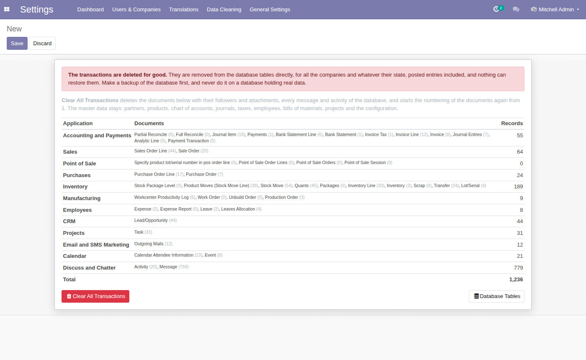
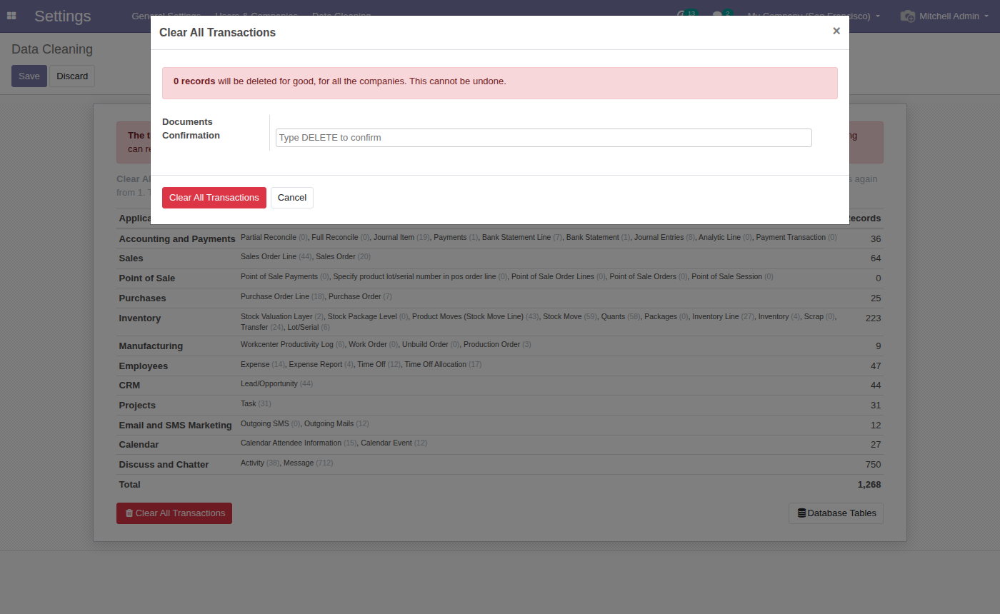
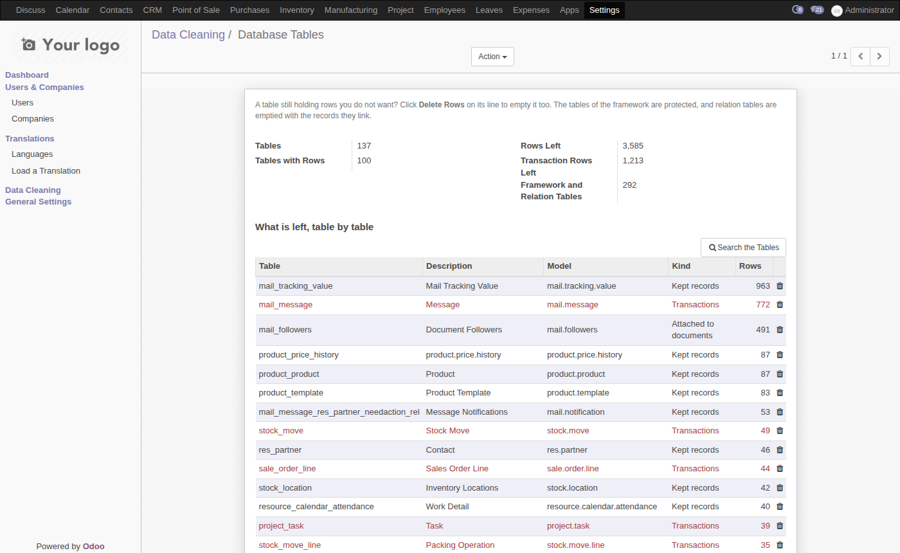
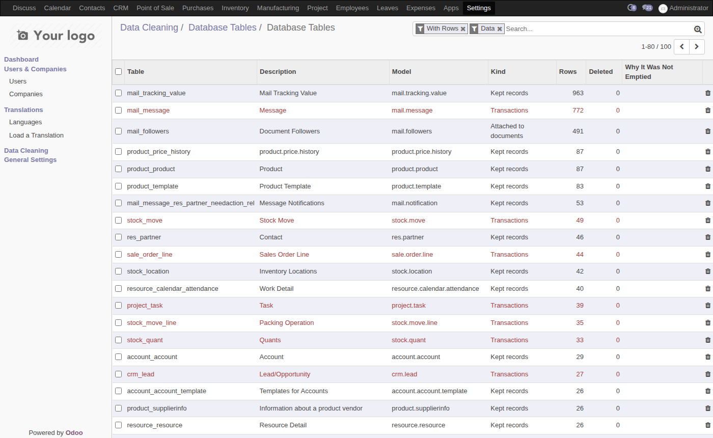
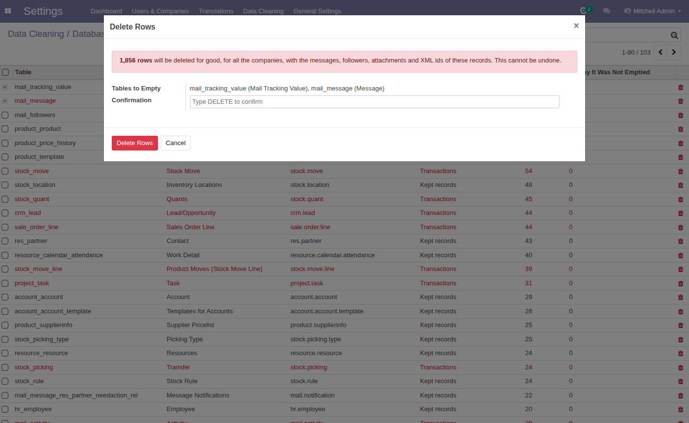
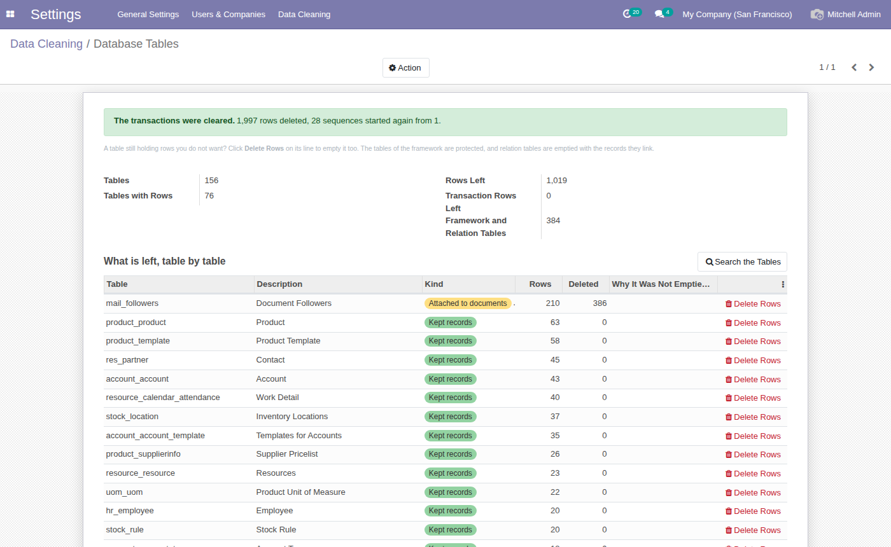

Email: odoomates@gmail.com
Set Odoo up and test it in the database you go live with, then clear every test transaction in one click. Master data and configuration stay.
Configure once, in the database you go live with: clear the test data, uninstall the module, go live.
Only the apps installed on the database are touched. Their documents go with their followers, attachments and XML ids, and their numbering starts again from 1.
See what goes before it goes, confirm it, and check what is left.
Settings > Data Cleaning lists, app by app, the documents that would be deleted and how many records each holds.




Your own, third-party and Enterprise-only apps have their own documents. After the clearing they are still in the report with their row count: Delete Rows empties them, with their followers, attachments and XML ids.


/opt/odoo/custom-addons, and add that folder to addons_path in odoo.conf.Remove Data is free and open source under LGPL-3, for Odoo 20.
Your rating helps others find it; your requests and pull requests decide what comes next.
★ Rate us on Odoo Apps 💡 Request a feature 🐛 Report an issue ★ Star us on GitHub